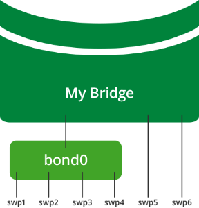

Bonding - Link Aggregation
Linux bonding provides a method for aggregating multiple network interfaces (slaves) into a single logical bonded interface (bond). The only bonding mode supported in Cumulus Linux is the IEEE 802.3ad link aggregation mode, which allows one or more links to be aggregated together to form a link aggregation group (LAG), such that a media access control (MAC) client can treat the link aggregation group as if it were a single link.
The benefits of link aggregation include:
-
Linear scaling of bandwidth as links are added to LAG
-
Load balancing
-
Failover protection
Cumulus Linux uses version 1 of the LAG control protocol (LACP).
To temporarily bring up a bond even when there is no LACP partner, use LACP Bypass.
Contents
Hash Distribution
Egress traffic through a bond is distributed to a slave based on a packet hash calculation, providing load balancing over the slaves; many conversation flows are distributed over all available slaves to load balance the total traffic. Traffic for a single conversation flow always hashes to the same slave.
The hash calculation uses packet header data to pick which slave to transmit the packet to:
-
For IP traffic, IP header source and destination fields are used in the calculation.
-
For IP + TCP/UDP traffic, source and destination ports are included in the hash calculation.
In a failover event, the hash calculation is adjusted to steer traffic over available slaves.
Creating a Bond
Bonds can be created and configured using the Network Command Line Utility (NCLU). Follow the steps below to create a new bond:
-
SSH into the switch.
-
Add a bond using the net add bond command, replacing [bond-name] with the name of the bond, and [slaves] with the list of slaves:
cumulus@switch:~$ net add bond [bond-name] bond slaves [slaves]cumulus@switch:~$ net pendingcumulus@switch:~$ net commit
The name of the bond must be:
-
Compliant with Linux interface naming conventions.
-
Unique within the switch.
Configuration Options
The configuration options, and their default values, are listed in the table below.
Each bond configuration option, except for bond slaves, is set to the recommended value by default in Cumulus Linux. They should only be configured if a different setting is needed. For more information on configuration values, refer to the Related Information section below.
|
NCLU Configuration Option |
Description |
Default Value |
|
bond mode |
The defined bonding mode. Cumulus Linux only supports IEEE 802.3ad link aggregation mode. This setting must not be changed. |
802.3ad |
|
bond slaves |
The list of slaves in the bond. |
N/A |
|
bond miimon |
Defines how often the link state of each slave is inspected for failures. |
100 |
|
bond use-carrier |
Determines the link state. |
1 |
|
bond xmit-hash-policy |
Hash method used to select the slave for a given packet. This setting must not be changed. |
layer3+4 |
|
bond lacp-rate |
Sets the rate to ask the link partner to transmit LACP control packets. At this time, you can set the LACP rate to slow (0) only by editing the setting bond-lacp-rate to 0 in the /etc/network/interfaces file. |
1 |
|
bond min-links |
Defines the minimum number of links that must be active before the bond is put into service. A value greater than 1 is useful if higher level services need to ensure a minimum aggregate bandwidth level before activating a bond. Keeping bond-min-links set to 1 indicates the bond must have at least one active member. If the number of active members drops below the bond-min-links setting, the bond will appear to upper-level protocols as link-down. When the number of active links returns to greater than or equal to bond-min-links, the bond will become link-up. |
1 |
Example Configuration: Bonding 4 Slaves
In the following example, the front panel port interfaces swp1-swp4 are slaves in bond0, while swp5 and swp6 are not part of bond0.

Example Bond Configuration
The following commands create a bond with four slaves:
cumulus@switch:~$ net add bond bond0 address 10.0.0.1/30cumulus@switch:~$ net add bond bond0 bond slaves swp1-4cumulus@switch:~$ net pendingcumulus@switch:~$ net commitThese commands create this code snippet in the /etc/network/interfaces file:
auto bond0iface bond0 address 10.0.0.1/30 bond-slaves swp1 swp2 swp3 swp4If you are intending that the bond become part of a bridge, you don't need to specify an IP address.
When networking is started on switch, bond0 is created as MASTER and interfaces swp1-swp4 come up in SLAVE mode, as seen in the ip link show command:
cumulus@switch:~$ ip link show... 3: swp1: <BROADCAST,MULTICAST,SLAVE,UP,LOWER_UP> mtu 1500 qdisc pfifo_fast master bond0 state UP mode DEFAULT qlen 500 link/ether 44:38:39:00:03:c1 brd ff:ff:ff:ff:ff:ff4: swp2: <BROADCAST,MULTICAST,SLAVE,UP,LOWER_UP> mtu 1500 qdisc pfifo_fast master bond0 state UP mode DEFAULT qlen 500 link/ether 44:38:39:00:03:c1 brd ff:ff:ff:ff:ff:ff5: swp3: <BROADCAST,MULTICAST,SLAVE,UP,LOWER_UP> mtu 1500 qdisc pfifo_fast master bond0 state UP mode DEFAULT qlen 500 link/ether 44:38:39:00:03:c1 brd ff:ff:ff:ff:ff:ff6: swp4: <BROADCAST,MULTICAST,SLAVE,UP,LOWER_UP> mtu 1500 qdisc pfifo_fast master bond0 state UP mode DEFAULT qlen 500 link/ether 44:38:39:00:03:c1 brd ff:ff:ff:ff:ff:ff ... 55: bond0: <BROADCAST,MULTICAST,MASTER,UP,LOWER_UP> mtu 1500 qdisc noqueue state UP mode DEFAULT link/ether 44:38:39:00:03:c1 brd ff:ff:ff:ff:ff:ffAll slave interfaces within a bond have the same MAC address as the bond. Typically, the first slave added to the bond donates its MAC address as the bond MAC address, while the other slaves’ MAC addresses are set to the bond MAC address.
The bond MAC address is used as source MAC address for all traffic leaving the bond, and provides a single destination MAC address to address traffic to the bond.
Caveats and Errata
-
An interface cannot belong to multiple bonds.
-
A bond can have subinterfaces, but not the other way around.
-
A bond cannot enslave VLAN subinterfaces.
-
Slave ports within a bond should all be set to the same speed/duplex, and should match the link partner’s slave ports.